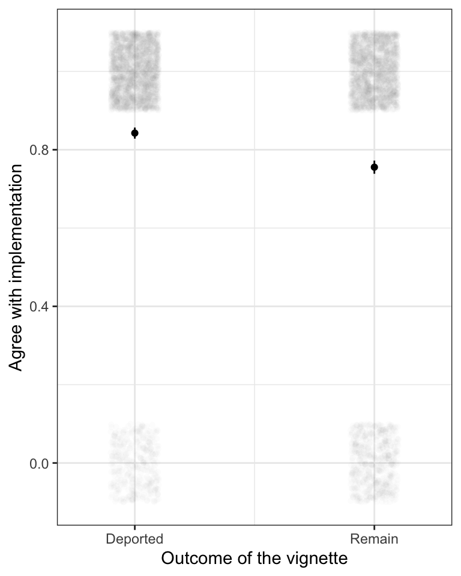
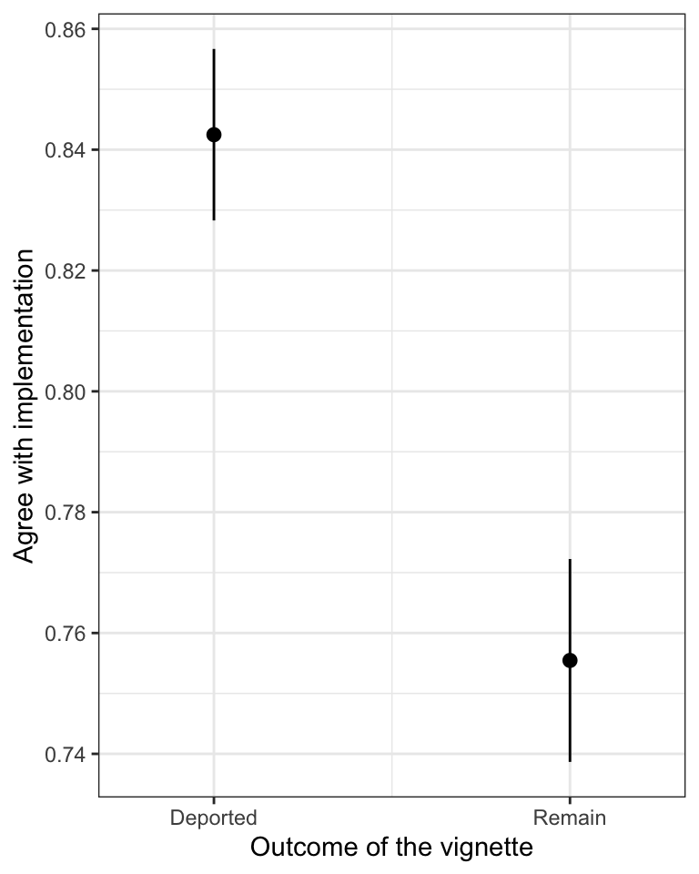
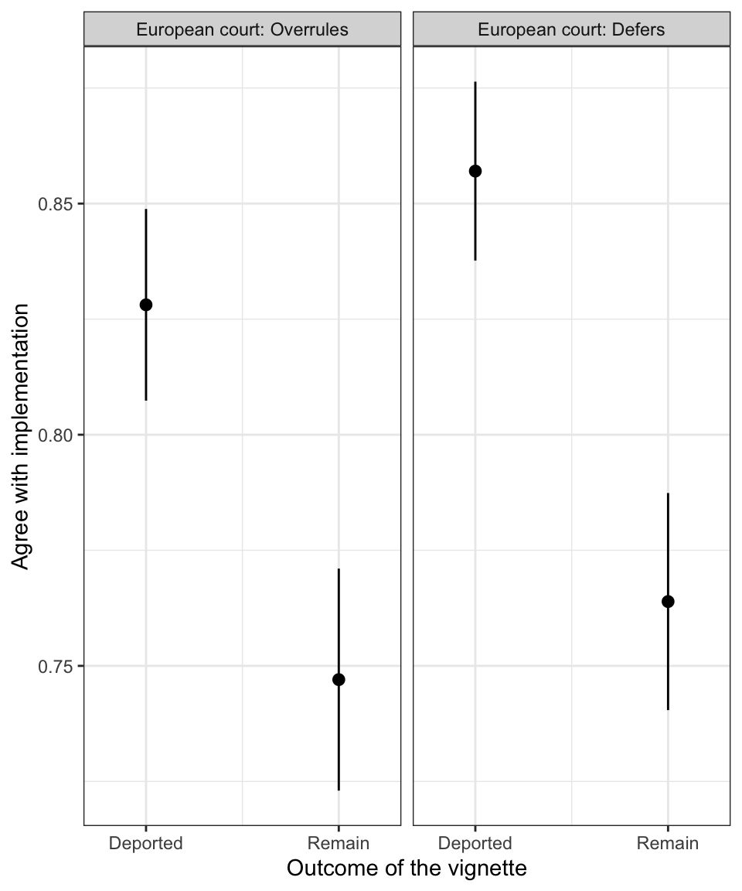
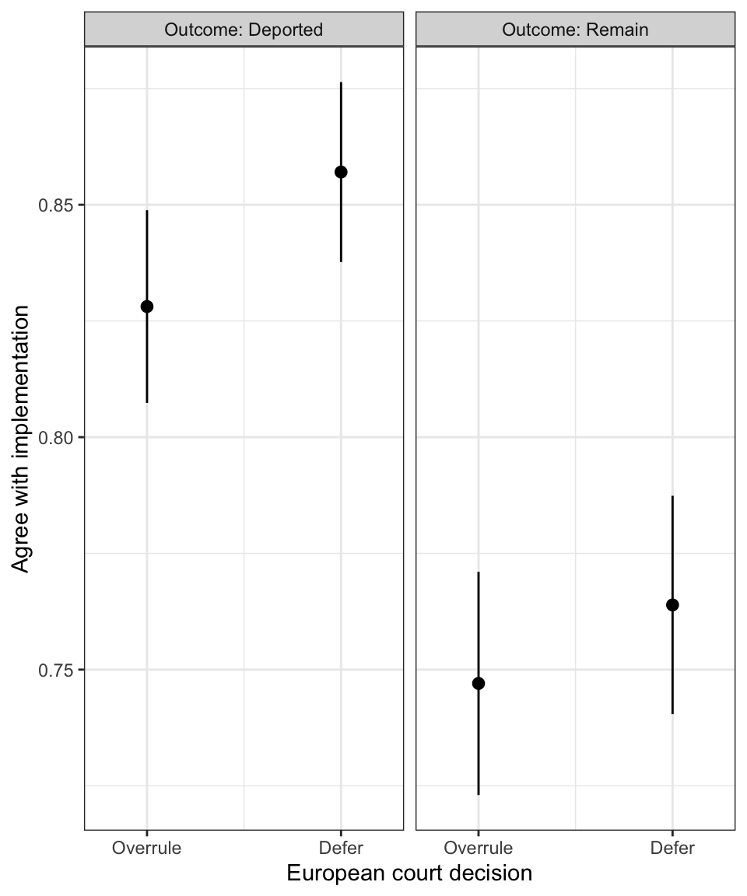

### Read in dataset
data <- read_csv("../../data/final_data.csv")PLSC 30600 Lab 2: Analayzing Experiments
Analyzing an experiment: Madsen et. al. (2021)
This lab will have you analyze and present results from an experiment conducted by Madsen, Mayoral, Strezhnev and Voeten (2021) examining attitudes towards international courts among voters in European countries. The experiment presented respondents with a vignette about a hypothetical court case in a European country that was then heard by a European court (the vignette was ambiguous, but one could imagine either the European Court of Justice or the European Court of Human Rights). The study manipulated two treatments: the outcome of the case and whether or not the European court overruled the domestic court. Three outcomes were observed: whether respondents agreed with the decision, whether they thought the decision should be implemented, and whether they supported the continued authority of European courts over domestic courts. The goal was to evaluate two competing hypotheses of what drives populist opposition to international courts: do they oppose courts because of a concern over national sovereignty (and so would support a domestic court making the same decision) or because of the content of the decisions (e.g. right-wing populists opposing pro-immigration policies). In other words, do controversial judgments get more support if the decision comes from a domestic court rather than from a European one. The experiment allowed the researchers to vary these attributes independently of one another in a hypothetical scenario.
The paper fielded multiple vignettes but here we’ll focus on the immigration vignette that was fielded in all five countries in the experiment: Denmark, UK, France, Spain and Poland. In the vignette, respondents were asked to consider a case where the government of their home country was considering deporting a foreigner who was convicted of a crime. The foreigner challenged the deportation in a UK court on the grounds that deportation violated his human rights. Two factors were randomly varied: whether the domestic court ruled in favor of the foreigner or in favor of the government and then whether the European court overruled or agreed with the domestic court. This was therefore a 2x2 “factorial” design with four unique treatment combinations. The UK vignette, for example, stated:
Suppose that United Kingdom (UK) authorities decided to deport a foreigner who has been convicted of a crime. The foreigner appealed at a UK court that the decision to deport him violated his human rights. The UK court found that the authorities [CAN/CANNOT] deport the foreigner. The question was then brought before a European court, which [AGREED WITH/DISAGREED WITH] the UK court. The final decision is that the foreigner should [REMAIN IN THE UK/BE DEPORTED].
We’ll estimate the effects of whether the foreigner was deported vs. not deported (“outcome treatment”) and the effect of whether the European court deferred to or overruled the domestic court (“deferrence treatment”).
Respondents were then asked 3 questions:
- Do you agree or disagree with the final decision?
- Do you agree or disagree that the final decision should be implemented?
- Do you agree or disagree that the country should continue to accept the authority of European courts?
All responses were on a 6-level scale (strongly disagree to strongly agree). In the pre-registration the analysis was to be conducted on the dichotomized “agree”/“disagree” outcome, so we’ll focus on estimating effects on that indicator, though we’ll also look at how to visualize treatment effects with multi-level or continuous outcomes. In practice, pre-registered “scales” combining multiple outcomes are increasingly common in recent experiments as they can be much less noisy than individual questions. Pre-registration avoids the risk of p-hacking and multiple testing in choosing how to create that scale.
Below is the code to read in the data
The analysis pre-registered four covariates that would be used to create strata for covariate adjustment: Age, Gender, Education and Country. For some experiments (the smaller ones run in only two countries), strata omitting age were required because they were otherwise too small and did not contain enough treated or control units.
## Make the strata for covariate adjustment
# Four vars: Age, Gender, Education, Country
# Age - bin into categories
data <- data %>% mutate(ageBin = case_when(QQuotas2 >= 18 & QQuotas2 <= 34 ~ "18-34",
QQuotas2 >= 35 & QQuotas2 <= 50 ~ "35-50",
QQuotas2 >= 51 ~"51+"))
data$age <- data$QQuotas2
# Gender - just take the response directly
data$gender <- data$QQuotas1
# Level of education - bin to college/non-college
data <- data %>% mutate(college = case_when(QQuotas3 == "ISCED 0: Early childhood education (‘less than primary’ )" ~ "Non-College",
QQuotas3 == "ISCED 1: Primary education" ~ "Non-College",
QQuotas3 == "ISCED 2: Lower secondary education" ~ "Non-College",
QQuotas3 == "ISCED 3: Upper secondary education" ~ "Non-College",
QQuotas3 == "ISCED 4:
Post-secondary non-tertiary education (NOT a University degree)" ~ "Non-College",
QQuotas3 == "ISCED 5: Short-cycle tertiary education" ~ "College",
QQuotas3 == "ISCED 6: Bachelor’s or equivalent level" ~ "College",
QQuotas3 == "ISCED 7: Master’s or equivalent level" ~ "College",
QQuotas3 == "ISCED 8: Doctoral or equivalent level" ~ "College"))
# Generate full-sample stratum bins
data$stratum <- paste(data$country, data$gender, data$college, data$ageBin, sep="|")
# Generate stratum without age because bins are too small
data$stratum_noage <- paste(data$country, data$gender, data$college, sep="|")We did a bunch of pre-processing of the raw survey responses from Qualtrics – mostly just labeling variables and generating the relevant indicators for treatment. You can ignore all of this code - it’s just tedious cleaning.
##Create binary outcome variables
# Outcome
data <- data %>% mutate(D1Agree = as.integer(!grepl("disagree", D1, ignore.case=T))) # Final decision
data <- data %>% mutate(D2Agree = as.integer(!grepl("disagree", D2, ignore.case=T))) # Should implement
data <- data %>% mutate(D3Agree = as.integer(!grepl("disagree", D3, ignore.case=T))) # Accept authority
data <- data %>% mutate(D4Agree = as.integer(!grepl("disagree", D4, ignore.case=T))) # Courts shouldn't intervene
data <- data %>% mutate(D5Agree = as.integer(!grepl("disagree", D5, ignore.case=T))) # Sue in domestic court
data <- data %>% mutate(D6Agree = as.integer(!grepl("disagree", D6, ignore.case=T))) # Stop letting IOs tell us what to do
# Fix missing data
data$D1Agree[is.na(data$D1)] <- NA
data$D2Agree[is.na(data$D2)] <- NA
data$D3Agree[is.na(data$D3)] <- NA
data$D4Agree[is.na(data$D4)] <- NA
data$D5Agree[is.na(data$D5)] <- NA
data$D6Agree[is.na(data$D6)] <- NA
# Vector with labels for each outcome - Used for graph labels
Outcomelabels= c("Agree with decision", "Should implement decision", "Accept authority of European courts",
"Courts shouldn't intervene", "Sue in domestic court","Stop letting IOs tell us")
Outcomelabelsshort= c("Agree", "Implement", "Accept authority","Intervene", "Sue domestic","Stop IOs")
Outcomelabelsprimary= c("Agree with decision", "Should implement decision", "Accept authority of European courts")
Outcomelabelsprimaryshort= c("Agree", "Implement", "Accept authority")
Outcomelabelssecondary= c("Courts shouldn't intervene", "Sue in domestic court","Stop letting IOs tell us")
Outcomelabelssecondaryshort= c("Intervene", "Sue domestic","Stop IOs")
# Continuous outcome variables for robustness checks
### Continuous agree variable
data <- data %>% mutate(D1AgreeC = case_when(D1 == "Strongly disagree" ~ 1,
D1 == "Disagree" ~ 2,
D1 == "Slightly disagree" ~ 3,
D1 == "Slightly agree" ~ 4,
D1 == "Agree" ~ 5,
D1 == "Strongly agree" ~ 6))
data <- data %>% mutate(D2AgreeC = case_when(D2 == "Strongly disagree" ~ 1,
D2 == "Disagree" ~ 2,
D2 == "Slightly disagree" ~ 3,
D2 == "Slightly agree" ~ 4,
D2 == "Agree" ~ 5,
D2 == "Strongly agree" ~ 6))
data <- data %>% mutate(D3AgreeC = case_when(D3 == "Strongly disagree" ~ 1,
D3 == "Disagree" ~ 2,
D3 == "Slightly disagree" ~ 3,
D3 == "Slightly agree" ~ 4,
D3 == "Agree" ~ 5,
D3 == "Strongly agree" ~ 6))
data <- data %>% mutate(D4AgreeC = case_when(D4 == "Strongly disagree" ~ 1,
D4 == "Disagree" ~ 2,
D4 == "Slightly disagree" ~ 3,
D4 == "Slightly agree" ~ 4,
D4 == "Agree" ~ 5,
D4 == "Strongly agree" ~ 6))
data <- data %>% mutate(D5AgreeC = case_when(D5 == "Strongly disagree" ~ 1,
D5 == "Disagree" ~ 2,
D5 == "Slightly disagree" ~ 3,
D5 == "Slightly agree" ~ 4,
D5 == "Agree" ~ 5,
D5 == "Strongly agree" ~ 6))
data <- data %>% mutate(D6AgreeC = case_when(D6 == "Strongly disagree" ~ 1,
D6 == "Disagree" ~ 2,
D6 == "Slightly disagree" ~ 3,
D6 == "Slightly agree" ~ 4,
D6 == "Agree" ~ 5,
D6 == "Strongly agree" ~ 6))
# Create moderator variables
data <- data %>% mutate(
SatLaw = case_when(QA4 == "Dissatisfied" ~ 0, # Satisfied with the legal system in your country
QA4 == "Very dissatisfied" ~ 0,
QA4 == "Very Satisfied" ~ 1,
QA4 == "Satisfied" ~ 1,
QA4 == "Neither dissatisfied nor satisfied" ~ 0),
trust = case_when(QA1 == "You can't be too careful in dealing with people (1)" ~ 1, # Trust
QA1 == "(2)" ~ 2,
QA1 == "(3)" ~ 3,
QA1 == "(4)" ~ 4,
QA1 == "(5)" ~ 5,
QA1 == "(6)" ~ 6,
QA1 == "Most people can be trusted (7)" ~ 7),
ideology = case_when(QC1 == "Extreme Left (0)" ~ 0, # Political ideology (numerical)
QC1 == "(1)" ~ 1,
QC1 == "(2)" ~ 2,
QC1 == "(3)" ~ 3,
QC1 == "(4)" ~ 4,
QC1 == "(5)" ~ 5,
QC1 == "(6)" ~ 6,
QC1 == "(7)" ~ 7,
QC1 == "(8)" ~ 8,
QC1 == "(9)" ~ 9,
QC1 == "Extreme right (10)" ~ 10),
National = if_else(QC4 == "British only", 1,0), # National attachment (1 = consider themselves (NATION) only)
Refugee = if_else(QB9 == "To deny legal status to someone who did not misrepresent their situation (e.g. faces a death threat back home)", 0,1), # Refugee attitudes (sympathy w/ applicant)
# Sympathy to eviction applicant
EvictFair = if_else(QB10 == "To evict people who were treated unfairly by a landlord or mortgage company.", 0,1),
EvictFair2 = case_when(QB5 == "Strongly agree" ~ 1, # Eviction/fairness (agreement scale)
QB5 == "Agree" ~ 1,
QB5 == "Slightly agree" ~ 1,
QB5 == "Slightly disagree" ~ 0,
QB5 == "Disagree" ~ 0,
QB5 == "Strongly disagree" ~0),
LGBTNotSameRights = case_when(QB1 == "Strongly agree" ~ 0, # Sympathy towards LGBT group.
QB1 == "Agree" ~ 0,
QB1 == "Slightly agree" ~ 0,
QB1 == "Slightly disagree" ~ 1,
QB1 == "Disagree" ~ 1,
QB1 == "Strongly disagree" ~ 1),
LGBTRights = case_when(QB1 == "Strongly agree" ~ 6, # LGBT rights
QB1 == "Agree" ~ 5,
QB1 == "Slightly agree" ~ 4,
QB1 == "Slightly disagree" ~ 3,
QB1 == "Disagree" ~ 2,
QB1 == "Strongly disagree" ~ 1),
IslamSymbol = case_when(QB4 == "Strongly agree" ~ 0, # Sympathy towards applicant (islam/Quran burning)
QB4 == "Agree" ~ 0,
QB4 == "Slightly agree" ~ 0,
QB4 == "Slightly disagree" ~ 1,
QB4 == "Disagree" ~ 1,
QB4 == "Strongly disagree" ~ 1),
Immigrants = case_when(QB3 == "Strongly agree" ~ 1, # Attitudes towards immmigration
QB3 == "Agree" ~ 1,
QB3 == "Slightly agree" ~ 1,
QB3 == "Slightly disagree" ~ 0,
QB3 == "Disagree" ~ 0,
QB3 == "Strongly disagree" ~ 0),
Aut1 = case_when(QC2_1 == "Strongly agree" ~ 0, # Authoritarianism scale - Q1
QC2_1 == "Agree" ~ 1,
QC2_1 == "Slightly agree" ~ 2,
QC2_1 == "Slightly disagree" ~ 3,
QC2_1 == "Disagree" ~ 4,
QC2_1 == "Strongly disagree" ~5),
Aut2 = case_when(QC2_2 == "Strongly agree" ~ 5, # Authoritarianism scale - Q2
QC2_2 == "Agree" ~ 4,
QC2_2 == "Slightly agree" ~ 3,
QC2_2 == "Slightly disagree" ~ 2,
QC2_2 == "Disagree" ~ 2,
QC2_2 == "Strongly disagree" ~2),
Aut3 = case_when(QC2_3 == "Strongly agree" ~ 5, # Authoritarianism scale - Q3
QC2_3 == "Agree" ~ 4,
QC2_3 == "Slightly agree" ~ 3,
QC2_3 == "Slightly disagree" ~ 2,
QC2_3 == "Disagree" ~ 1,
QC2_3 == "Strongly disagree" ~0),
Aut4 = case_when(QC2_4 == "Strongly agree" ~ 0, # Authoritarianism scale - Q4
QC2_4 == "Agree" ~ 1,
QC2_4 == "Slightly agree" ~ 2,
QC2_4 == "Slightly disagree" ~ 3,
QC2_4 == "Disagree" ~ 4,
QC2_4 == "Strongly disagree" ~5),
Autscale=(Aut1+Aut2+Aut3+Aut4)/20, # Combine the authoritarianism scale questions
Nat1 = case_when(QC2_5 == "Strongly agree" ~ 1, # Nationalism scale - Q1
QC2_5 == "Agree" ~ .8,
QC2_5 == "Slightly agree" ~ .6,
QC2_5 == "Slightly disagree" ~ .4,
QC2_5 == "Disagree" ~ .2,
QC2_5 == "Strongly disagree" ~0),
Nat2 = case_when(QC2_6 == "Strongly agree" ~ 1, # Nationalism scale - Q2
QC2_6 == "Agree" ~ .8,
QC2_6 == "Slightly agree" ~ .6,
QC2_6 == "Slightly disagree" ~ .4,
QC2_6 == "Disagree" ~ .2,
QC2_6 == "Strongly disagree" ~0),
Nat3 = case_when(QC3 == "Very proud" ~ 1, # Nationalism scale - Q3
QC3 == "Somewhat proud" ~ .75,
QC3 == "Not very proud" ~ .6,
QC3 == "Not proud at all" ~ .4),
Natscale = National + Nat1 + Nat2 + Nat3
)
# Coarsen authoritarianism and nationalism scales
data <- data %>% mutate(aut=if_else(Autscale>.5, 1, 0))
data <- data %>% mutate(nat=if_else(Natscale>1.4, 1, 0))# Definition of vignette
data <- data %>% mutate(Vignette = case_when(vignette == "immigration" ~ "Deportation",
vignette == "other"&(country=="uk"|country=="denmark")~ "Quran burning",
vignette == "other"&(country=="spain"|country=="france") ~ "Eviction",
vignette == "other"&(country=="poland") ~ "Pride Parade")
)
# Categorize outcomes
data <- data %>% mutate(
caseOutcome = case_when(outcome == "can"&judgment=="agree" ~ 0,
outcome == "can"&judgment=="disagree" ~ 1,
outcome == "cannot"&judgment=="disagree" ~ 0,
outcome == "cannot"&judgment=="agree" ~ 1,
outcome == "can"&judgment=="nocourt" ~ 0,
outcome == "cannot"&judgment=="nocourt" ~ 1),
caseOutcome=if_else(Vignette=="Pride Parade", caseOutcome*-1+1, caseOutcome)) ##Recodes the pride parade outcome
data <- data %>% mutate(caseDefer = case_when(judgment == "agree" ~ 1,
judgment == "disagree" ~ 0,
TRUE ~ NA_real_))
# Label vignettes by case outcomes
data <- data %>% mutate(VignetteOutcome = case_when(Vignette == "Quran burning" ~ "Quran burning, no fine",
Vignette == "Eviction" ~ "Eviction canceled",
Vignette == "Pride Parade" ~ "Pride parade not banned",
Vignette == "Deportation" ~ "Deportation prohibited")
)
### Six-category treatment
data <- data %>% mutate(
treatmentBlock = case_when(outcome == "can"&judgment=="agree" ~ "Entitled, Upheld",
outcome == "can"&judgment=="disagree" ~ "Entitled, Overturned",
outcome == "cannot"&judgment=="disagree" ~ "Not Entitled, Overturned",
outcome == "cannot"&judgment=="agree" ~ "Not Entitled, Upheld",
outcome == "can"&judgment=="nocourt" ~ "Entitled, No Court",
outcome == "cannot"&judgment=="nocourt" ~ "Not Entitled, No Court"))
### Treatment ordering with numeric labels
data <- data %>% mutate(treatmentLabel = case_when(treatmentBlock == "Entitled, Upheld" ~ "Applicant loses, EC defers (2)",
treatmentBlock == "Entitled, Overturned" ~ "Applicant wins, EC overturns (3)",
treatmentBlock == "Not Entitled, Overturned" ~ "Applicant loses, EC overturns (4)",
treatmentBlock == "Not Entitled, Upheld" ~ "Applicant wins, EC defers (1)",
treatmentBlock == "Entitled, No Court" ~ "Applicant loses, No EC (6)",
treatmentBlock == "Not Entitled, No Court" ~ "Applicant wins, No EC (5)"))
# Categorize individuals as unsympathetic towards applicant (1 is less sympathetic)
# This leverages the four sympathy covariates
data <- data %>% mutate(sympathy = case_when(Vignette == "Deportation" ~ Refugee,
Vignette == "Quran burning" ~ IslamSymbol,
Vignette == "Eviction" ~ EvictFair,
Vignette == "Pride Parade" ~ LGBTNotSameRights))
# Country labels with caps to look better in graphs
data$countryLabel <- data$country
data$countryLabel[data$country == "denmark"] <- "Denmark"
data$countryLabel[data$country == "uk"] <- "UK"
data$countryLabel[data$country == "poland"] <- "Poland"
data$countryLabel[data$country == "france"] <- "France"
data$countryLabel[data$country == "spain"] <- "Spain"We also wrote a function for the stratified estimator – literally just taking the difference in means in each sub-group and averaging up to get the point and variance estimates for the ATE. Don’t necessarily need to use this function, but can be useful to see the process broken down into parts in the code.
# Stratified regression estimator
strat_reg <- function(formula, data, stratum){
# Raw counts (use this do diagnostics if things go wrong)
counts <- data %>% group_by(stratum) %>% summarize(N=n())
# within each level of the data, fit the model in "formula", lm_robust is linear regression with robust standard error
stratum_regs <- data %>% group_by(stratum) %>% group_map(~lm_robust(formula=formula, data=.))
# get sizes of each stratum
sample_sizes <- unlist(lapply(stratum_regs, function(x) x$nobs))
#nobs for most recent version of estimatr - if you're having issues, replace nobs with N (this changed at some point in that package's development)
sample_shares <- sample_sizes/sum(sample_sizes)
# get point estimates
point_est <- sapply(stratum_regs, function(x) x$coefficients)
if (!is.matrix(point_est)&is.vector(point_est)){
point_est <- t(as.matrix(point_est))
}
# check for NAs
if(sum(apply(point_est, 1, function(x) sum(is.na(x)))) > 0){
print(counts[apply(point_est, 2, function(x) sum(is.na(x))) != 0,])
stop("Error: NAs in stratified point estimates, coarsen strata to obtain enough units in each treatment condition per stratum")
}
var_est <- sapply(stratum_regs, function(x) abs(diag(vcov(x))))
# diagonals must be positive, some numerical issues w/ Variances of 0 (Pr(Y) = 1 or 0)
if (!is.matrix(var_est)&is.vector(var_est)){
var_est <- t(as.matrix(var_est))
}
# check for NAs
if(sum(apply(var_est, 1, function(x) sum(is.na(x)))) > 0){
print(counts[apply(var_est, 2, function(x) sum(is.na(x))) != 0,])
stop("Error: NAs in stratified variance estimates, coarsen strata to obtain enough units in each treatment condition per stratum")
}
point_combined <- apply(point_est, 1, function(x) sum(x*sample_shares))
se_combined <- apply(var_est, 1, function(x) sqrt(sum(x*sample_shares^2)))
# Fix names for 1-length vectors
if(length(point_combined) < 2){
char_names <- c("(Mean)")
}else{
char_names <- names(point_combined)
}
# Save the results
out_results <- data.frame(term = as.character(char_names), estimate=point_combined, std.error = se_combined)
out_results$statistic <- out_results$estimate/out_results$std.error
out_results$conf.low <- out_results$estimate - qnorm(.975)*out_results$std.error
out_results$conf.high <- out_results$estimate + qnorm(.975)*out_results$std.error
return(out_results)
}Estimating the ATEs
Our outcome variables are
D1Agree(Binary agree/disagree with decision)D2Agree(Binary agree/disagree with implementing the decision)D3Agree(Binary agree/disagree on European courts should have authority)
Our two treatments are
caseOutcome(0 if foreigner deported, 1 if not deported)caseDefer(0 if European court overruled domestic, 1 if European court deferred)
We’ll subset the data down to the immigration vignette. One last small thing is that the immigration vignette also had some number of observations assigned to a “no court” treatment that omitted any European court involvement – since the sample size was already large, there was room to include this “placebo” treatment to see if even mentioning a European court affected attitudes. For today we’ll ignore that treatment
# Only the immigration vignette
data_immigration <- data %>% filter(vignette == "immigration"&judgment!="nocourt")
# Any missing responses: a tiny proportion of observations are missing
sum(is.na(data_immigration$D1Agree))[1] 4sum(is.na(data_immigration$D2Agree))[1] 6sum(is.na(data_immigration$D3Agree))[1] 4# Negligible missingness (only about 6 obs!) -- not really a problem to drop them - very likely missing at random
data_immigration <- data_immigration %>% filter(!is.na(D1Agree)&!is.na(D2Agree)&!is.na(D3Agree))
# Summary stats - sample size
data_immigration %>% group_by(country, caseOutcome, caseDefer) %>% summarize(N=n())# A tibble: 20 × 4
# Groups: country, caseOutcome [10]
country caseOutcome caseDefer N
<chr> <dbl> <dbl> <int>
1 denmark 0 0 259
2 denmark 0 1 249
3 denmark 1 0 256
4 denmark 1 1 248
5 france 0 0 255
6 france 0 1 251
7 france 1 0 251
8 france 1 1 253
9 poland 0 0 252
10 poland 0 1 249
11 poland 1 0 249
12 poland 1 1 255
13 spain 0 0 254
14 spain 0 1 255
15 spain 1 0 257
16 spain 1 1 253
17 uk 0 0 254
18 uk 0 1 255
19 uk 1 0 248
20 uk 1 1 249Let’s estimate the ATE of the case outcome and the deference treatment on support for implementation (D2Agree) (without covariate adjustment)
# Outcome treatment (effect of immigrant "remaining" in country)
ate_outcome <- lm_robust(D2Agree ~ caseOutcome, data=data_immigration)
summary(ate_outcome)
Call:
lm_robust(formula = D2Agree ~ caseOutcome, data = data_immigration)
Standard error type: HC2
Coefficients:
Estimate Std. Error t value Pr(>|t|) CI Lower CI Upper DF
(Intercept) 0.84248 0.00724 116.370 0.000e+00 0.8283 0.85667 5050
caseOutcome -0.08702 0.01122 -7.759 1.027e-14 -0.1090 -0.06503 5050
Multiple R-squared: 0.01179 , Adjusted R-squared: 0.0116
F-statistic: 60.21 on 1 and 5050 DF, p-value: 1.027e-14# Court deference treatment (effect of european court agreeing with domestic)
ate_defer <- lm_robust(D2Agree ~ caseDefer, data=data_immigration)
summary(ate_defer)
Call:
lm_robust(formula = D2Agree ~ caseDefer, data = data_immigration)
Standard error type: HC2
Coefficients:
Estimate Std. Error t value Pr(>|t|) CI Lower CI Upper DF
(Intercept) 0.78777 0.008123 96.984 0.00000 0.7718472 0.80370 5050
caseDefer 0.02272 0.011271 2.016 0.04389 0.0006223 0.04481 5050
Multiple R-squared: 0.0008036 , Adjusted R-squared: 0.0006058
F-statistic: 4.063 on 1 and 5050 DF, p-value: 0.04389We might be interested in the effect of one treatment holding the other constant. For that, we include both indicators + an interaction (again, still a fully-saturated model, so it’s still just differences in means, but we have 4 means instead of two).
# Outcome treatment (effect of immigrant "remaining" in country)
joint_model <- lm_robust(D2Agree ~ caseOutcome + caseDefer + caseOutcome*caseDefer, data=data_immigration)
summary(joint_model)
Call:
lm_robust(formula = D2Agree ~ caseOutcome + caseDefer + caseOutcome *
caseDefer, data = data_immigration)
Standard error type: HC2
Coefficients:
Estimate Std. Error t value Pr(>|t|) CI Lower CI Upper
(Intercept) 0.82810 0.01057 78.3102 0.000e+00 0.8073696 0.84883
caseOutcome -0.08107 0.01618 -5.0107 5.610e-07 -0.1127949 -0.04935
caseDefer 0.02893 0.01446 2.0000 4.556e-02 0.0005721 0.05729
caseOutcome:caseDefer -0.01204 0.02242 -0.5372 5.912e-01 -0.0559982 0.03191
DF
(Intercept) 5048
caseOutcome 5048
caseDefer 5048
caseOutcome:caseDefer 5048
Multiple R-squared: 0.01267 , Adjusted R-squared: 0.01208
F-statistic: 22.2 on 3 and 5048 DF, p-value: 2.816e-14How do we interpret the baseline and interaction terms – what particular effect does the lower-order coefficient on correspond to (and why is it not the ATE)? How do we interpret the interaction term? What do we conclude about whether court deference moderates the effect of the case outcome treatment?
# Great trick if you want a different interpretation for the lower order terms -
# just re-level the thing you're interacting with.
joint_model_2 <- lm_robust(D2Agree ~ caseOutcome + I(1-caseDefer) + caseOutcome*I(1-caseDefer), data=data_immigration)
summary(joint_model_2)
Call:
lm_robust(formula = D2Agree ~ caseOutcome + I(1 - caseDefer) +
caseOutcome * I(1 - caseDefer), data = data_immigration)
Standard error type: HC2
Coefficients:
Estimate Std. Error t value Pr(>|t|) CI Lower
(Intercept) 0.85703 0.009869 86.8390 0.000e+00 0.83768
caseOutcome -0.09312 0.015520 -5.9998 2.113e-09 -0.12354
I(1 - caseDefer) -0.02893 0.014465 -2.0000 4.556e-02 -0.05729
caseOutcome:I(1 - caseDefer) 0.01204 0.022421 0.5372 5.912e-01 -0.03191
CI Upper DF
(Intercept) 0.8763773 5048
caseOutcome -0.0626920 5048
I(1 - caseDefer) -0.0005721 5048
caseOutcome:I(1 - caseDefer) 0.0559982 5048
Multiple R-squared: 0.01267 , Adjusted R-squared: 0.01208
F-statistic: 22.2 on 3 and 5048 DF, p-value: 2.816e-14What if we were to look for heterogeneity in the effect of remain vs. deport by country?
# Outcome treatment (effect of immigrant "remaining" in country)
ate_outcome_country <- lm_robust(D2Agree ~ caseOutcome + country + caseOutcome*country, data=data_immigration)
summary(ate_outcome_country)
Call:
lm_robust(formula = D2Agree ~ caseOutcome + country + caseOutcome *
country, data = data_immigration)
Standard error type: HC2
Coefficients:
Estimate Std. Error t value Pr(>|t|) CI Lower
(Intercept) 0.89961 0.01335 67.403 0.000e+00 0.87344
caseOutcome -0.15159 0.02351 -6.447 1.247e-10 -0.19769
countryfrance -0.06166 0.02114 -2.916 3.557e-03 -0.10311
countrypoland -0.10320 0.02241 -4.604 4.245e-06 -0.14714
countryspain -0.09607 0.02211 -4.345 1.421e-05 -0.13942
countryuk -0.02534 0.01986 -1.276 2.020e-01 -0.06428
caseOutcome:countryfrance -0.03754 0.03570 -1.052 2.931e-01 -0.10754
caseOutcome:countrypoland 0.12106 0.03512 3.447 5.723e-04 0.05220
caseOutcome:countryspain 0.15198 0.03425 4.437 9.326e-06 0.08482
caseOutcome:countryuk 0.08819 0.03284 2.686 7.265e-03 0.02381
CI Upper DF
(Intercept) 0.92577 5042
caseOutcome -0.10549 5042
countryfrance -0.02021 5042
countrypoland -0.05926 5042
countryspain -0.05272 5042
countryuk 0.01360 5042
caseOutcome:countryfrance 0.03245 5042
caseOutcome:countrypoland 0.18991 5042
caseOutcome:countryspain 0.21913 5042
caseOutcome:countryuk 0.15257 5042
Multiple R-squared: 0.02727 , Adjusted R-squared: 0.02554
F-statistic: 15.56 on 9 and 5042 DF, p-value: < 2.2e-16What’s the interpretation of the lower order coefficient on caseOutcome? Which of the five countries is “left out”? How would we get the effect for Spain?
# Easiest trick is to "re-level" the country factor in R
data_immigration$country2 <- as.factor(data_immigration$country)
data_immigration$country2 <- relevel(data_immigration$country2, "spain")
ate_outcome_country2 <- lm_robust(D2Agree ~ caseOutcome + country2 + caseOutcome*country2, data=data_immigration)
summary(ate_outcome_country2)
Call:
lm_robust(formula = D2Agree ~ caseOutcome + country2 + caseOutcome *
country2, data = data_immigration)
Standard error type: HC2
Coefficients:
Estimate Std. Error t value Pr(>|t|) CI Lower
(Intercept) 0.8035363 0.01763 45.58201 0.000e+00 0.76898
caseOutcome 0.0003852 0.02491 0.01547 9.877e-01 -0.04845
country2denmark 0.0960700 0.02211 4.34490 1.421e-05 0.05272
country2france 0.0344083 0.02408 1.42915 1.530e-01 -0.01279
country2poland -0.0071292 0.02520 -0.28290 7.773e-01 -0.05653
country2uk 0.0707269 0.02296 3.08047 2.078e-03 0.02572
caseOutcome:country2denmark -0.1519756 0.03425 -4.43677 9.326e-06 -0.21913
caseOutcome:country2france -0.1895204 0.03664 -5.17279 2.396e-07 -0.26135
caseOutcome:country2poland -0.0309194 0.03607 -0.85715 3.914e-01 -0.10164
caseOutcome:country2uk -0.0637833 0.03385 -1.88411 5.961e-02 -0.13015
CI Upper DF
(Intercept) 0.838096 5042
caseOutcome 0.049217 5042
country2denmark 0.139417 5042
country2france 0.081608 5042
country2poland 0.042274 5042
country2uk 0.115738 5042
caseOutcome:country2denmark -0.084824 5042
caseOutcome:country2france -0.117694 5042
caseOutcome:country2poland 0.039798 5042
caseOutcome:country2uk 0.002584 5042
Multiple R-squared: 0.02727 , Adjusted R-squared: 0.02554
F-statistic: 15.56 on 9 and 5042 DF, p-value: < 2.2e-16Adjusting for covariates
Let’s compare the covariate-adjusted to the non-covariate adjusted estimates. First, using our strata
## Unadjusted
# Outcome treatment (effect of immigrant "remaining" in country)
ate_outcome <- lm_robust(D2Agree ~ caseOutcome, data=data_immigration)
summary(ate_outcome)
Call:
lm_robust(formula = D2Agree ~ caseOutcome, data = data_immigration)
Standard error type: HC2
Coefficients:
Estimate Std. Error t value Pr(>|t|) CI Lower CI Upper DF
(Intercept) 0.84248 0.00724 116.370 0.000e+00 0.8283 0.85667 5050
caseOutcome -0.08702 0.01122 -7.759 1.027e-14 -0.1090 -0.06503 5050
Multiple R-squared: 0.01179 , Adjusted R-squared: 0.0116
F-statistic: 60.21 on 1 and 5050 DF, p-value: 1.027e-14## Adjusted
ate_outcome_adj <- strat_reg(D2Agree ~ caseOutcome, data=data_immigration, stratum=data_immigration$stratum)Warning in sqrt(diag(vcov_fit$Vcov_hat)): NaNs producedate_outcome_adj term estimate std.error statistic conf.low
(Intercept) (Intercept) 0.84063451 0.007304275 115.088020 0.8263184
caseOutcome caseOutcome -0.08408576 0.011207703 -7.502498 -0.1060525
conf.high
(Intercept) 0.85495062
caseOutcome -0.06211907## Lin estimator is the same!
ate_outcome_lin <- lm_lin(D2Agree ~ caseOutcome, covariates = ~stratum, data=data_immigration)
tidy(ate_outcome_lin) %>% filter(term == "caseOutcome") term estimate std.error statistic p.value conf.low
1 caseOutcome -0.08408576 0.0112077 -7.502498 7.399576e-14 -0.1060579
conf.high df outcome
1 -0.06211361 4872 D2Agree# Court deference treatment (effect of european court agreeing with domestic)
ate_defer <- lm_robust(D2Agree ~ caseDefer, data=data_immigration)
summary(ate_defer)
Call:
lm_robust(formula = D2Agree ~ caseDefer, data = data_immigration)
Standard error type: HC2
Coefficients:
Estimate Std. Error t value Pr(>|t|) CI Lower CI Upper DF
(Intercept) 0.78777 0.008123 96.984 0.00000 0.7718472 0.80370 5050
caseDefer 0.02272 0.011271 2.016 0.04389 0.0006223 0.04481 5050
Multiple R-squared: 0.0008036 , Adjusted R-squared: 0.0006058
F-statistic: 4.063 on 1 and 5050 DF, p-value: 0.04389ate_defer_adj <- strat_reg(D2Agree ~ caseDefer, data=data_immigration, stratum=data_immigration$stratum)
ate_defer_adj term estimate std.error statistic conf.low conf.high
(Intercept) (Intercept) 0.78595646 0.008255984 95.198404 0.769775031 0.80213789
caseDefer caseDefer 0.02563942 0.011370306 2.254946 0.003354033 0.04792481Our strata didn’t really do that much. This is probably because the covariates didn’t really explain the outcome particularly well and at the sample sizes in this experiment (approximately 5k for the immigration study), additional marginal improvements in variance are hard to get without very predictive covariates.
# Outcome treatment (effect of immigrant "remaining" in country)
ate_outcome <- lm_robust(D2Agree ~ caseDefer, data=data_immigration)
summary(ate_outcome)
Call:
lm_robust(formula = D2Agree ~ caseDefer, data = data_immigration)
Standard error type: HC2
Coefficients:
Estimate Std. Error t value Pr(>|t|) CI Lower CI Upper DF
(Intercept) 0.78777 0.008123 96.984 0.00000 0.7718472 0.80370 5050
caseDefer 0.02272 0.011271 2.016 0.04389 0.0006223 0.04481 5050
Multiple R-squared: 0.0008036 , Adjusted R-squared: 0.0006058
F-statistic: 4.063 on 1 and 5050 DF, p-value: 0.04389# Basically same results with an additive model instead of a fully interacted one (strata)
ate_outcome_adjusted <- lm_lin(D2Agree ~ caseDefer,
covariates = ~ age + college + country + gender, data=data_immigration)
summary(ate_outcome_adjusted)
Call:
lm_lin(formula = D2Agree ~ caseDefer, covariates = ~age + college +
country + gender, data = data_immigration)
Standard error type: HC2
Coefficients:
Estimate Std. Error t value Pr(>|t|)
(Intercept) 0.7810266 0.0090517 86.2850 0.000000
caseDefer 0.0305613 0.0124494 2.4548 0.014136
age_c -0.0005204 0.0005773 -0.9015 0.367358
collegeNon-College_c 0.0235250 0.0190525 1.2347 0.216996
countryfrance_c -0.0374158 0.0319965 -1.1694 0.242321
countrypoland_c -0.0415791 0.0324957 -1.2795 0.200784
countryspain_c 0.0176615 0.0306062 0.5771 0.563932
countryuk_c 0.0505307 0.0302197 1.6721 0.094578
genderMale_c 0.0212639 0.0182594 1.1645 0.244271
caseDefer:age_c 0.0022201 0.0007857 2.8257 0.004740
caseDefer:collegeNon-College_c -0.0047776 0.0263756 -0.1811 0.856269
caseDefer:countryfrance_c -0.1192564 0.0433357 -2.7519 0.005951
caseDefer:countrypoland_c -0.0274120 0.0431787 -0.6348 0.525562
caseDefer:countryspain_c -0.0784565 0.0408382 -1.9212 0.054782
caseDefer:countryuk_c -0.0696368 0.0401146 -1.7359 0.082648
caseDefer:genderMale_c -0.0277902 0.0251008 -1.1071 0.268295
CI Lower CI Upper DF
(Intercept) 0.7632804 0.7987728 4114
caseDefer 0.0061537 0.0549689 4114
age_c -0.0016522 0.0006113 4114
collegeNon-College_c -0.0138282 0.0608782 4114
countryfrance_c -0.1001463 0.0253146 4114
countrypoland_c -0.1052882 0.0221301 4114
countryspain_c -0.0423432 0.0776663 4114
countryuk_c -0.0087162 0.1097775 4114
genderMale_c -0.0145344 0.0570621 4114
caseDefer:age_c 0.0006797 0.0037604 4114
caseDefer:collegeNon-College_c -0.0564880 0.0469328 4114
caseDefer:countryfrance_c -0.2042178 -0.0342950 4114
caseDefer:countrypoland_c -0.1120656 0.0572417 4114
caseDefer:countryspain_c -0.1585215 0.0016086 4114
caseDefer:countryuk_c -0.1482831 0.0090094 4114
caseDefer:genderMale_c -0.0770013 0.0214208 4114
Multiple R-squared: 0.01654 , Adjusted R-squared: 0.01296
F-statistic: 4.743 on 15 and 4114 DF, p-value: 3.428e-09Visualizing the results
Coppock (2020) has an excellent guide, “Visualize as you Randomize” on constructing visualizations from experiments, using the underlying design to guide graphics choices. One principle is that a good visualization should give a sense of both the underlying data and the experimental design. For example, if we wanted to visualize the ATE, we could present estimates for the means of the treated and the control groups – but we might also want to use a plot of the raw observations to give a sense of the sizes of both the treated and the control groups
We’ll first want to get the marginal means from the lm_robust fit (average under control, average under treated). You can do this manually from the components of lm_robust itself – the mean for control is just \(\beta_0\), the mean for treated is \(\beta_1 + \beta_0\) and you can calculate the SE for that sum using the variance-covariance matrix. However, this gets tedious with lots of levels and luckily there are packages that will calculate marginal means for you – ggeffects is a good one (and was imported above)
# Plot the marginal means and the data
ate_outcome <- lm_robust(D2Agree ~ caseOutcome, data=data_immigration)
ate_margins <- ggeffects::ggeffect(ate_outcome, terms = "caseOutcome")
ate_margins <- as_tibble(ate_margins)
# First let's plot the raw data -- add a jitter since it's binary, then add the margins
# And add transparency (alpha)
data_immigration %>% ggplot(aes(x=caseOutcome, y=D2Agree)) + geom_point(position = position_jitter(height=.1, width=.1),
shape = 16,
alpha=.01) +
geom_pointrange(aes(x=x, y=predicted, ymin=conf.low, ymax=conf.high), data=ate_margins, size=.2) +
theme_bw() +
scale_x_continuous("Outcome of the vignette",breaks=c(0,1), limits=c(-.25,1.25), labels=c("Deported", "Remain")) +
ylab("Agree with implementation")
# Compare to just plotting marginal means
ate_margins %>% ggplot() + geom_pointrange(aes(x=x, y=predicted, ymin=conf.low, ymax=conf.high), size=.4) +
theme_bw() +
scale_x_continuous("Outcome of the vignette",breaks=c(0,1), limits=c(-.25,1.25), labels=c("Deported", "Remain")) +
ylab("Agree with implementation")
We can compare plotting on top of the raw data with just plotting the marginal means – some advantages and disadvantages to both – for example, it’s hard to see the confidence intervals with the x-axis scaled from 0 to 1 since we have very high precision, but we do get a clearer sense of the magnitude of the effect. Zooming in makes it easier to see the CIs but narrows the X-axis.
How about the joint treatment effects? Let’s plot them using faceting
# Plot the marginal means and the data
joint_effect <- lm_robust(D2Agree ~ caseOutcome*caseDefer, data=data_immigration)
joint_margins <- ggeffects::ggeffect(joint_effect, c("caseOutcome","caseDefer"))
joint_margins# Predicted values of D2Agree
# caseDefer = 0
caseOutcome | Predicted | 95% CI
--------------------------------------
0 | 0.83 | [0.81, 0.85]
1 | 0.75 | [0.72, 0.77]
# caseDefer = 1
caseOutcome | Predicted | 95% CI
--------------------------------------
0 | 0.86 | [0.84, 0.88]
1 | 0.76 | [0.74, 0.79]# Make into a table
joint_margins_tbl <- as_tibble(joint_margins)
joint_margins_tbl <- joint_margins_tbl %>% mutate(caseOutcome = x) %>%
mutate(caseDefer = as.numeric(group)-1) # Rename variables
# Let's make a "labeler"
outcome_names = c(`0` = "Outcome: Deported",
`1` = "Outcome: Remain")
defer_names = c(`0` = "European court: Overrules",
`1` = "European court: Defers")
# Which do we facet on?
joint_margins_tbl %>% ggplot() + geom_pointrange(aes(x=caseOutcome, y=predicted, ymin=conf.low, ymax=conf.high), size=.4) +
theme_bw() + facet_wrap(~caseDefer, labeller = as_labeller(defer_names)) +
scale_x_continuous("Outcome of the vignette",breaks=c(0,1), limits=c(-.25,1.25),
labels=c("Deported", "Remain")) + ylab("Agree with implementation")
joint_margins_tbl %>% ggplot() + geom_pointrange(aes(x=caseDefer, y=predicted, ymin=conf.low, ymax=conf.high), size=.4) +
theme_bw() + facet_wrap(~caseOutcome, labeller = as_labeller(outcome_names)) +
scale_x_continuous("European court decision",breaks=c(0,1), limits=c(-.25,1.25),
labels=c("Overrule", "Defer")) + ylab("Agree with implementation")
Compare the two figures above – they display the same information, but what does each figure focus on? Which conditional ATEs does the first emphasize vs. the second?
Challenge
Visualize the ATEs on the 6-point approval scale D2AgreeC instead of the binary indicator – plot the marginal means on top of the raw data (use jitter). What do you find?